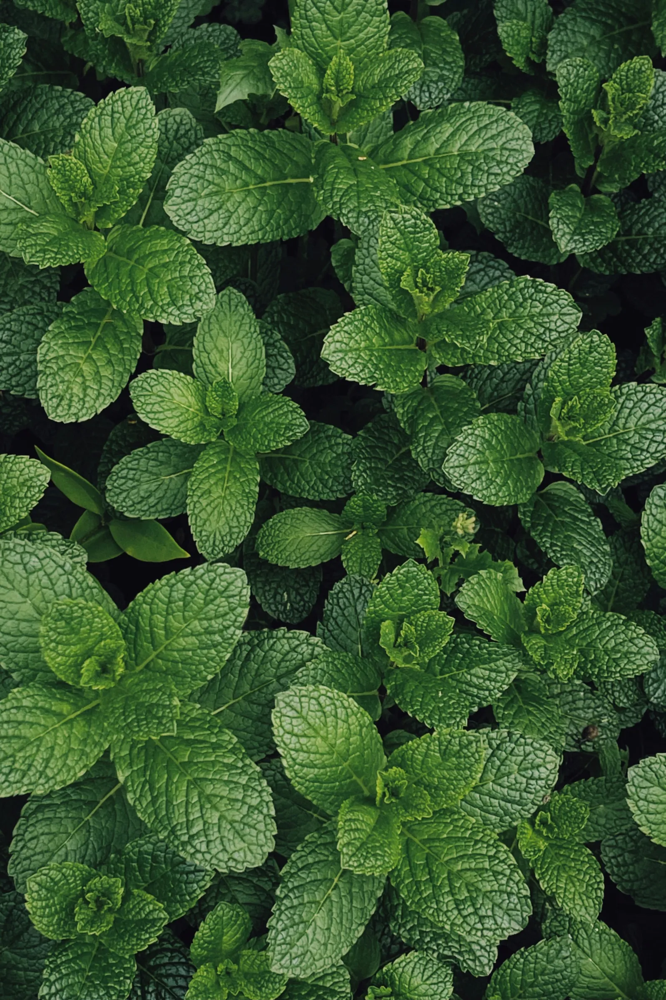

Ayuntamiento de Senés
JARDIN BOTANICO DE ESPECIES AUTOCTONAS DE SENES

Mentha spicata

La hierbabuena (Mentha spicata) es una planta herbácea perenne aromática muy extendida en el ámbito mediterráneo. Se caracteriza por su intenso aroma refrescante y por su rápido crecimiento, formando matas densas.
Presenta tallos erectos y ramificados, con hojas opuestas, alargadas y de borde ligeramente dentado. Sus flores son pequeñas, de color blanquecino o violáceo, y aparecen agrupadas en espigas terminales durante la floración.
La hierbabuena se distribuye ampliamente en regiones templadas y mediterráneas, creciendo de forma espontánea o cultivada en huertos y jardines. Prefiere suelos frescos y húmedos.
En el entorno de Senés, es habitual en huertos y zonas cercanas al agua, donde se cultiva por su uso culinario y medicinal.
La hierbabuena es muy valorada por sus propiedades digestivas, carminativas y refrescantes. Se utiliza tradicionalmente en infusiones para aliviar molestias estomacales y mejorar la digestión.
También posee propiedades antisépticas y relajantes, siendo una de las plantas más utilizadas en la medicina popular.
La hierbabuena simboliza la frescura, la vitalidad y el bienestar. Su aroma la asocia con la limpieza y la renovación.
Es una planta muy vinculada a la vida cotidiana y a la tradición mediterránea.
En Senés, la hierbabuena ha sido utilizada en infusiones y como ingrediente culinario, especialmente para aromatizar platos y bebidas.
Su cultivo en huertos domésticos formaba parte de la tradición local.
La hierbabuena florece principalmente en verano, produciendo espigas florales que atraen a insectos polinizadores.
La hierbabuena es una de las plantas aromáticas más utilizadas en gastronomía a nivel mundial. Su sabor fresco la hace ideal para infusiones, bebidas y platos tradicionales.
Además, es una planta de fácil cultivo que puede extenderse rápidamente mediante sus raíces.